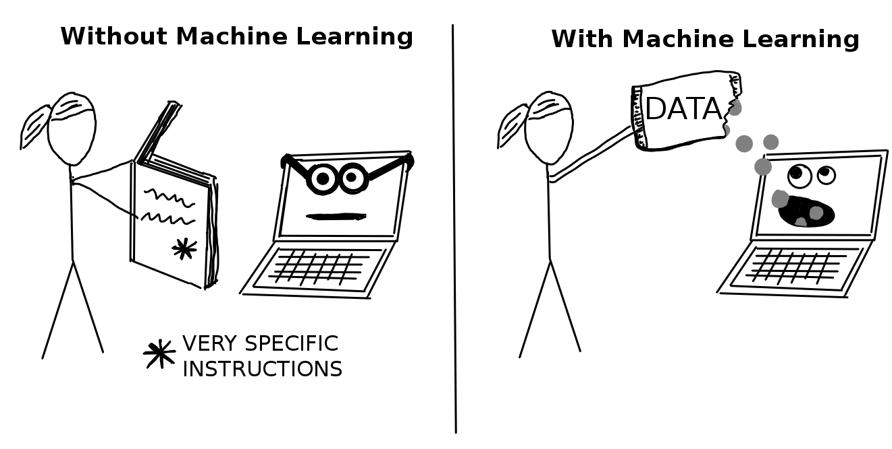
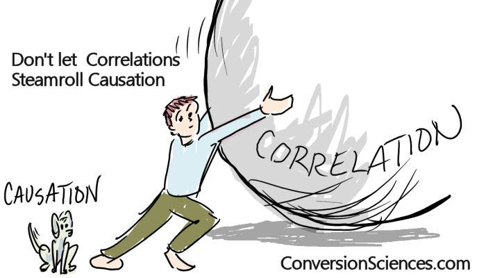

As a Ph.D. in Finance, I want to make money from my knowledge, so I started working independently on stock trading algorithms in my spare time. I was reading about quantitative analysis on forums and blogs and had this idea about quant research. My attention quickly turned to machine learning and neural networks. By reading more, I realized that these techniques could be applied generally to all kinds of domains, not just finance. By that time, I was hooked, and I just knew I had to learn programming and machine learning.

Here I have posted some Python tutorials on Machine Learning.- Multiple Regression with Scikit-Learn Learning: Using Pandas package to read and manage data; using Scikit-Learn package to build up model and compute the regression weights; computing the Residual Sum of Squares; looking at coefficients and interpreting their meanings; evaluating multiple models via RSS.
- Gradient Descent for Multiple Regression Learning: Using NumPy arrays; writing user-defined functions in Python; writing a numpy function to compute the derivative of the regression weights with respect to a single feature; writing gradient descent function to compute the regression weights given an initial weight vector, step size and tolerance; using the gradient descent function to estimate regression weights for multiple features.
- Assessing Performance - Polynomial Regression Learning: Writing a function to take an an array and a degree and return an data frame where each column is the array to a polynomial value up to the total degree; Using a plotting tool (e.g. matplotlib) to visualize polynomial regressions; using a plotting tool (e.g. matplotlib) to visualize the same polynomial degree on different subsets of the data; using a validation set to select a polynomial degree; assessing the final fit using test data.
- Ridge Regression Learning: Using a pre-built implementation of regression to run polynomial regression; using matplotlib to visualize polynomial regressions; using a pre-built implementation of regression to run polynomial regression, this time with L2 penalty; using matplotlib to visualize polynomial regressions under L2 regularization; choosing best L2 penalty using cross-validation; assessing the final fit using test data; implementing the ridge regression learning algorithm using gradient descent
- Feature Selection and LASSO Regression Learning: Running LASSO with different L1 penalties; choosing best L1 penalty using a validation set. choosing best L1 penalty using a validation set, with additional constraint on the size of subset; implementing your own LASSO solver using coordinate descent.
- Nearest Neighbors & Kernel Regression Learning: Finding the k-nearest neighbors of a given query input; predicting the output for the query input using the k-nearest neighbors; choosing the best value of k using a validation set.
- Linear Classifiers and Logistic Regression Learning: Training a logistic regression model to predict the sentiment of product reviews; inspecting the weights (coefficients) of a trained logistic regression model; making a prediction (both class and probability) of sentiment for a new product review; writing a function to compute the accuracy of the model; inspecting the coefficients of the logistic regression model and interpret their meanings; comparing multiple logistic regression models.
- Maximum Likelihood Estimation for Parameter Learning Learning: Implementing the link function for logistic regression; writing a function to compute the derivative of the log likelihood function with respect to a single coefficient; implementing gradient ascent; predicting sentiments; computing classification accuracy for the logistic regression model.
- Overfitting and Regularization in Logistic Regression Learning: Writing a function to compute the derivative of log likelihood function with an L2 penalty with respect to a single coefficient; implementing gradient ascent with an L2 penalty; empirically exploring how the L2 penalty can ameliorate overfitting.
When there is a strong relationship in a scatterplot, we tend to jump to a premature and often false conclusion that changes in the predictor are actually causing changes in the outcome. We can never reliably conclude “this is what did it” just by seeing a strong correlation (or any other form of strong relationship) between variables. Correlations are critical in scientific analysis, but given enough data, it is possible to find things that correlate, even when they shouldn't. The famous example concerns a strong correlation between the rise of the use of Facebook and the deterioration in the Greek economy. The site Spurious Correlations also posts many funny ones to spurious correlations, such as a 0.99 correlation between “US spending on science, space, and technology” and “Suicides by hanging, strangulation and suffocation” or a 0.99 correlation between “Divorce rate in Maine” and “Per capita consumption of margarine (US)”.
So, when you see your interested variable is strongly statistically significant at the first time of running regression model, don't get too excited and straightforwardly conclude that it has a positive or negative effect on the dependent variable. That relationship can be a spurious accidental correlation! Keep in your mind that correlation is not causation.

Here I have implemented some popular statistical methods for causal inference in R.- Propensity Score Matching (PSM)
PSM is a widely used tool for determining causal effects from observational data. Propensity scores summarize the effects of a potentially large number of confounding variables by creating a predictive model of treatment. The computation of a propensity score requires specifying a set of potentially confounding variables. In this tutorial, we will implement PSM with steps following: i) estimate the propensity score (the probability of being Treated given a set of pre-treatment covariates); ii) choose and execute a matching algorithm; iii) examine covariate balance after matching; iv) estimate treatment effects.
- Difference in Differences (DiD) DiD is a quasi-experimental design that makes use of longitudinal data from treatment and control groups to obtain an appropriate counterfactual to estimate a causal effect. DiD is typically used to estimate the effect of a specific intervention or treatment (such as a passage of law, enactment of policy, or large-scale program implementation) by comparing the changes in outcomes over time between a population that is enrolled in a program (the intervention group) and a population that is not (the control group). In this tutorial, we will implement DiD by reproduce the results of the famous paper “Minimum Wages and Employment: A Case Study of the Fast-Food Industry in New Jersey and Pennsylvania” of Card and Krueger (1994).